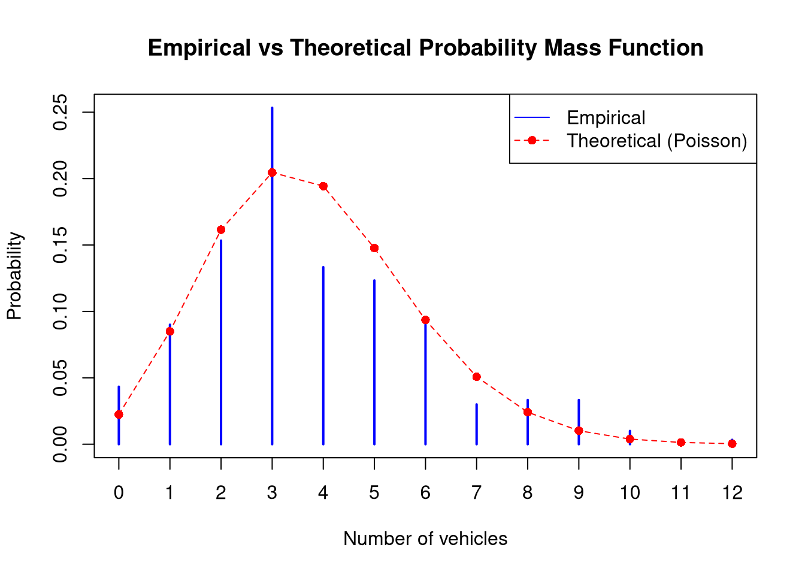
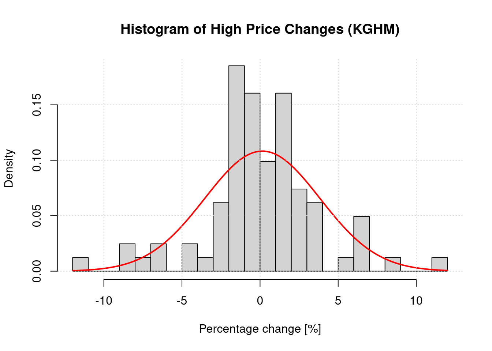
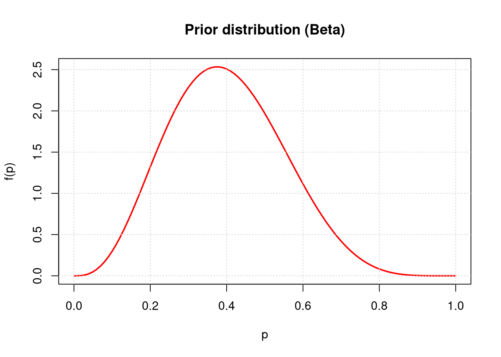
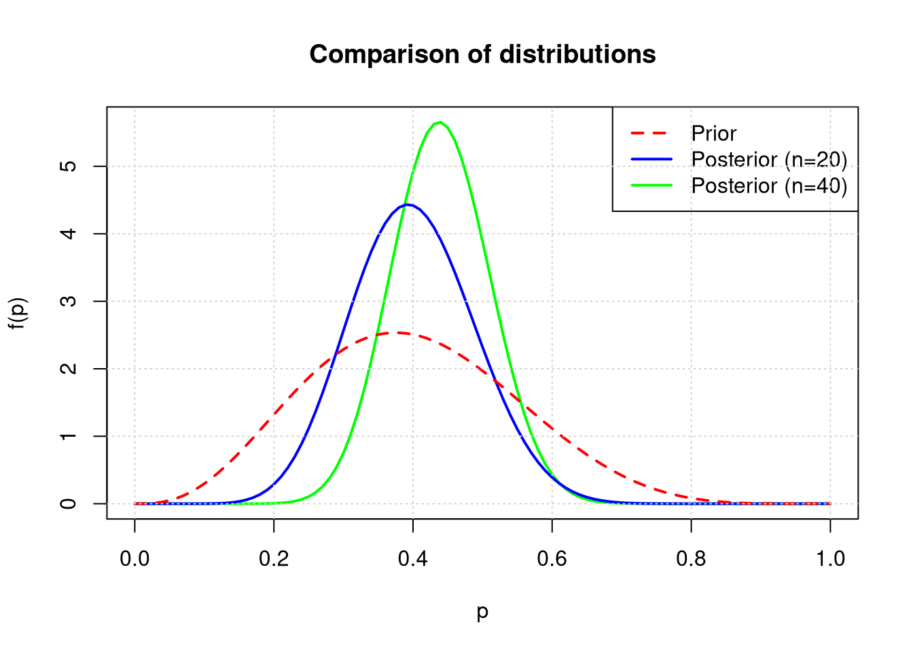

Parameter Estimation and Probability Distributions
Author
Michał Janiga
1 Modeling Traffic Flow Intensity
The Poisson distribution is frequently used to model traffic flow (with low intensity). The file skrety.txt contains the number of vehicles turning right at a certain intersection within three hundred 3-minute time intervals (the data were collected at different times of the day).
Load the data using the command scan(‘skrety.txt’).
Fit a Poisson distribution to the data, i.e., estimate the parameter \(\lambda\) of the Poisson distribution, and record its value in the report.
Verify and describe the consistency of the distribution with the estimated parameter \(\lambda\) against the registered data by graphically comparing the empirical and theoretical probability functions. Use the table() and dpois() functions analogously to Example 4 in Project 1.
Use the non-parametric bootstrap method to estimate the standard deviation of the estimator of the parameter \(\lambda\), and record its value in the report.
show/hide
# 1. Data loadingtraffic_data <-scan('data/skrety.txt')# 2. Estimation of the lambda parameter (sample arithmetic mean)# - represents both the expected value and variancelambda_est <-mean(traffic_data)# 3. Graphical consistency; empirical vs theoretical# Empirical frequency (percentage share of each number of cars)empirical_table <-table(traffic_data) /length(traffic_data)# Preparing the rangex_axis <-0:max(traffic_data)# Theoretical probability from the Poisson distributiontheoretical_prob <-dpois(x_axis, lambda = lambda_est)# Comparative plotplot(empirical_table, type ="h", lwd =2, col ="blue", main ="Empirical vs Theoretical Probability Mass Function",xlab ="Number of vehicles", ylab ="Probability")points(x_axis, theoretical_prob, col ="red", pch =16)lines(x_axis, theoretical_prob, col ="red", lty =2)legend("topright", legend =c("Empirical", "Theoretical (Poisson)"), col =c("blue", "red"), lty =c(1, 2), pch =c(NA, 16))

show/hide
# 4. Non-parametric bootstrap (resampling with replacement directly from the dataset)B <-1000boot_lambdas <-replicate(B, mean(sample(traffic_data, replace =TRUE)))sd_boot <-sd(boot_lambdas)
Estimated parameter lambda (lambda_est) for the Poisson distribution = 3.801
Standard deviation of the estimator (sd_boot) = 0.131
Conclusions: Using the non-parametric bootstrap method with B = 1000 replications, the standard error of the lambda estimator (\(\lambda\)) was determined. The obtained value of approximately 0.131 indicates a high precision of estimation given the sample size n = 300. This means that 300 time intervals constitute a sufficiently large sample to trust the result.
2 Analysis of Rates of Return for KGHM
For one selected company listed on the Warsaw Stock Exchange (GPW), calculate the percentage changes of the highest daily prices (Najwyzszy) over the last year and plot their histogram.
Estimate the mean and variance of the percentage changes of the highest prices for the selected company, and record these values in the report.
Based on the histogram and the probability density function plot determined for the estimated parameters (mean and variance), roughly verify whether we can assume that the percentage changes of the highest daily prices follow a normal distribution.
Assuming that the changes of the highest daily prices follow a normal distribution, determine the 90%, 95%, and 99% confidence intervals for the mean and variance of the percentage changes of the highest daily prices for the selected company. Compare the results obtained for different confidence intervals.
Downloading and preparing data for KGHM:
show/hide
Ticker <-'KGH'if (file.exists(".env")) readRenviron(".env")apikey <-Sys.getenv("STOOQ_API_KEY")webLink <-paste0('https://stooq.pl/q/d/l/?s=', Ticker, '&i=d', '&apikey=', apikey)file_path <-paste0("data/", Ticker, ".csv")if (!file.exists(file_path)) {download.file(webLink, file_path, quiet =TRUE)}df_KGH <-read.csv(file_path)df_KGH$Data <-as.Date(df_KGH$Data)# Restricting data to the last yeardf_KGH_year <- df_KGH[which(df_KGH$Data >= (Sys.Date() -365)),]# Calculating percentage changes of the high pricesn_kgh <-nrow(df_KGH_year)df_KGH_year$High_pct_change <-c(NA, 100*diff(df_KGH_year$Najwyzszy) / df_KGH_year$Najwyzszy[-n_kgh])df_KGH_year = df_KGH_year[!is.na(df_KGH_year$High_pct_change),]
The estimated mean value is 0.1466 %, and the variance is 13.577 %.
Verification of distribution “normality”:
show/hide
hist(df_KGH_year$High_pct_change, breaks =30, prob =TRUE, main ="Histogram of High Price Changes (KGHM)",xlab ="Percentage change [%]", ylab ="Density")curve(dnorm(x, mean = mean_kgh, sd = sd_kgh), add =TRUE, col ="red", lwd =2)grid()

The histogram suggests that the distribution is close to normal (symmetric, bell-shaped), although there are “fat tails” and a higher concentration around the mean than in the ideal theoretical distribution. The theoretical normal distribution underestimates the frequency of events with small changes in the highest price. Additionally, the theoretical distribution underestimates extreme events, i.e., theoretical indications suggest a virtually zero probability of such an event occurring, whereas in reality they do occur and can determine the success of an investment. In short: the normal distribution does not account for extreme events.
Confidence intervals for the mean and variance:
show/hide
conf_levels =c(0.90, 0.95, 0.99)results_mean =data.frame(Level = conf_levels, Lower =NA, Upper =NA)results_var =data.frame(Level = conf_levels, Lower =NA, Upper =NA)for(i in1:length(conf_levels)) { gamma = conf_levels[i]# Interval for the mean (Student's t-distribution, as estimates are from the sample) w = sd_kgh *qt((1+ gamma)/2, n_kgh -1) /sqrt(n_kgh) results_mean[i, 2:3] =c(mean_kgh - w, mean_kgh + w)# Interval for the variance (chi-squared distribution, as variance cannot be negative) a = (1- gamma)/2 b = (1- gamma)/2 results_var[i, 2:3] =c((n_kgh -1) * var_kgh /qchisq(1- b, n_kgh -1), (n_kgh -1) * var_kgh /qchisq(a, n_kgh -1))}
Conclusions: As the confidence level increases (from 90% to 99%), the width of the confidence intervals increases, which is consistent with theory – to have greater confidence that the parameter lies within the interval, we must widen that interval. It should be noted that a useful value for an investor or manager would be to use the standard deviation, which operates in real units. Thus, the risk measure, eg. volatility, remains a factor of individual assessment or can be used to set the position size in a portfolio targeting pre-determined return-to-risk parameters.
Conclusions cont.: Although the determined confidence intervals for the mean and variance allow for a mathematical description of KGHM’s stock price volatility, their decision-making value in a long-term investment strategy is limited. Statistics only describe historical price behavior (symptoms) without delving into the company’s business model (causes). For a fundamental investor, the health of the company remains crucial, whereas variance analysis serves only for technical adjustment of the acceptable portfolio fluctuation level (volatility management rather than value management).
3 Bayesian Inference
A tossed thumbtack lands point-down or point-up. This experiment can be described by a Bernoulli distribution with parameter \(p\) representing the probability of the thumbtack landing point-up.
The distribution of the parameter \(p\) can be described by a Beta distribution with parameters \(\alpha\) and \(\beta\). The mean and variance in a Beta distribution depend on the parameters of the distribution in the following way: \[ \mathbb{E}X = \frac{\alpha}{\alpha + \beta}, \qquad \mathbb{V}X = \frac{\alpha\beta}{(\alpha + \beta)^2(\alpha + \beta + 1)}, \qquad mode = \frac{\alpha - 1}{\alpha + \beta - 2}.\]
Based on the hypothesized (prior) expected value of the parameter \(p\), propose values for the parameters \(\alpha\) and \(\beta\) of the prior distribution of parameter \(p\). Draw the prior distribution of parameter \(p\) (use the dbeta() function).
Toss the thumbtack 20 times and record the results of subsequent tosses (1 - thumbtack lands point-up, 0 - thumbtack lands point-down). Determine and plot the posterior distribution of parameter \(p\) and calculate the value of the Bayesian estimator \(\hat{p}\). In the case under consideration, the posterior distribution of parameter \(p\) is also a Beta distribution with parameters: \[ \alpha_{\textrm{post}} = \alpha_{\textrm{prior}} + \sum_{i=1}^n x_i, \qquad \beta_{\textrm{post}} = \beta_{\textrm{prior}} + n - \sum_{i=1}^n x_i,\qquad x_i\in\{0,1\}.\]
Toss the thumbtack another 20 times and record the results. Determine and plot the posterior distribution based on all 40 tosses and calculate the value of the Bayesian estimator \(\hat{p}\) in this case. Compare the results with those obtained after the first 20 tosses.
Using the formula for the variance of the Beta distribution, determine and compare the variances of the prior distribution, posterior after 20 tosses, and posterior after 40 tosses.
Prior parameters proposal: We assume that \(p \approx 0.4\). We adopt \(\alpha_{prior} = 4\) and \(\beta_{prior} = 6\).
Then \(\mathbb{E}p = 4 / (4+6) = 0.4\).
show/hide
# Let the "strength" of belief be 10 (the sample size indicates low certainty)alpha_prior =4# successesbeta_prior =6# failurescurve(dbeta(x, alpha_prior, beta_prior), from =0, to =1,main ="Prior distribution (Beta)", xlab ="p", ylab ="f(p)",col ="red", lwd =2)grid()

Simulation of the first 20 tosses and determination of the posterior distribution: (We simulate tosses with probability \(p = 0.35\))
show/hide
set.seed(123)n1 =20x1 =rbinom(n1, 1, 0.35) # toss simulations1 =sum(x1) # sum of successesalpha_post1 = alpha_prior + s1beta_post1 = beta_prior + n1 - s1# Bayesian estimator - expected value of the posterior distributionp_hat1 = alpha_post1 / (alpha_post1 + beta_post1) # updating p
In the first 20 tosses, 8 successes were obtained. Posterior parameters (n=20): \(\alpha_{post1}\) = 12, \(\beta_{post1}\) = 18. Bayesian estimator \(\hat{p}_{20}\) = 0.4.
In a total of 40 tosses, 18 successes were obtained. Posterior parameters (n=40): \(\alpha_{post2}\) = 22, \(\beta_{post2}\) = 28. Bayesian estimator \(\hat{p}_{40}\) = 0.44.
Comparison plot:
show/hide
curve(dbeta(x, alpha_post2, beta_post2), from =0, to =1, col ="green", lwd =2,main ="Comparison of distributions", xlab ="p", ylab ="f(p)")curve(dbeta(x, alpha_post1, beta_post1), add =TRUE, col ="blue", lwd =2)curve(dbeta(x, alpha_prior, beta_prior), add =TRUE, col ="red", lwd =2, lty =2)legend("topright", legend =c("Prior", "Posterior (n=20)", "Posterior (n=40)"),col =c("red", "blue", "green"), lty =c(2, 1, 1), lwd =2)grid()

Variance comparison:
show/hide
var_beta =function(a, b) (a * b) / ((a + b)^2* (a + b +1))v_prior =var_beta(alpha_prior, beta_prior)v_post1 =var_beta(alpha_post1, beta_post1)v_post2 =var_beta(alpha_post2, beta_post2)
Conclusions: As the number of tosses increases (from 0 to 20 and 40), the variance of the distribution of parameter \(p\) decreases, which indicates an increase in certainty regarding the estimated probability value. The distribution becomes more “concentrated” around the true value.
4 Analysis of Photon Registration Intervals
The file fotony.txt contains intervals between registration times of consecutive gamma-ray photons captured by the Compton Gamma Ray Observatory (CGRO) space telescope in 1991.
Load the data using the command scan(‘fotony.txt’)
Using the method of moments and the maximum likelihood method, determine the estimates of the gamma distribution parameters corresponding to the registered data. Compare the results obtained for both methods.
On a single plot, draw the histogram of intervals and the probability density functions of the gamma distribution with parameters estimated using both methods.
Using the parametric bootstrap method, determine the standard deviations of the gamma distribution parameter estimators (\(\alpha\) and \(\beta\)) and their 95% confidence intervals for both methods (moments and maximum likelihood). Compare the results obtained for both methods.
# We assume that the sample characteristics should correspond to the theoretical characteristics of the modelm1 =mean(photons_x)m2 =mean(photons_x^2)# Thus the variance will be: m2 - m1^2alpha_mom = m1^2/ (m2 - m1^2)beta_mom = (m2 - m1^2) / m1
Conclusion: The estimated shape parameter \(\hat{\alpha}\) indicates that the photon registration process by the CGRO telescope is close to a Poisson process (exponential distribution), which is consistent with the physical nature of gamma radiation registration. The obtained scale \(\hat{\beta}\) allows for precise determination of the intensity of this radiation during the studied period.
Conclusions: Visual analysis of the histogram and the overlaid Gamma densities estimated using the MoM and MLE methods confirms the high quality of the model fit. The negligible differences between the two estimation methods and the close fit of the curves to the empirical data suggest that the parameters \(\hat{\alpha}\) and \(\hat{\beta}\) were estimated reliably, and the Gamma distribution correctly captures the characteristics of the intervals between photon registrations.
Statistical analysis of intervals between photons demonstrated that the Gamma distribution model is highly stable. Comparison of estimation methods indicates the advantage of the Maximum Likelihood Estimation (MLE) method, which provided estimators with a lower standard error (\(SD_{\alpha} = 0.020\)) and narrower 95% confidence intervals compared to the Method of Moments. The determined confidence intervals for the shape parameter \(\alpha\) (MLE: \([1.013; 1.094]\)) allow us to reject the hypothesis of a purely exponential nature of the distribution (\(\alpha = 1\)) at a significance level of \(0.05\). The process has a subtle structure that cannot be explained by a simple exponential distribution.